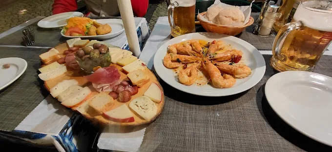

Autêntica Cozinha Portuguesa
Floresta
da Cidade
Um recanto acolhedor no coração do Bairro Alto
01 / 03
Autêntica Cozinha Portuguesa
Um recanto acolhedor no coração do Bairro Alto
.webp)
Sobre Nós
No histórico Bairro Alto, na encantadora Travessa do Poço da Cidade, a Floresta da Cidade é um refúgio de sabores genuinamente portugueses. Aqui, a tradição não é apenas uma palavra — é a essência de cada prato que sai da nossa cozinha.
Preparamos receitas autênticas com produtos regionais frescos, num ambiente descontraído e acolhedor onde todos são bem-vindos. Da refeição de almoço ao jantar tardio, a nossa esplanada e o nosso espaço interior convidam a ficar.
A poucos passos do Metro Baixa-Chiado, somos o destino certo para quem procura cozinha portuguesa de qualidade no coração de Lisboa.
Porquê Escolher-nos
Receitas genuínas da gastronomia portuguesa com ingredientes frescos e produtos regionais de qualidade, preparadas com todo o cuidado.
Desfrute da atmosfera única do Bairro Alto na nossa esplanada — o lugar perfeito para um almoço ao sol ou um jantar ao ar livre.
Situados na encantadora Travessa do Poço da Cidade, a apenas 256 metros do Metro Baixa-Chiado e rodeados pelas melhores atrações de Lisboa.
O Que Servimos
Sabores genuínos da tradição portuguesa
Pão artesanal com manteiga de alho e ervas aromáticas
Chouriço alentejano grelhado na brasa com broa
Pataniscas tradicionais com arroz de feijão
Polvo grelhado com azeite, alho e batata a murro
Seleção de queijos, presunto, enchidos e azeitonas
Camarão fresco grelhado com manteiga de limão e coentros
Sopa tradicional de couve com chouriço e batata
Sopa caseira confecionada com produtos frescos da época
Açorda tradicional com pão alentejano, ovo e coentros
Caldo rico de marisco com croutons de broa e coentros
Bacalhau desfiado com batata palha, ovos mexidos e azeitonas
Lombo de bacalhau com crosta de broa, batata e legumes salteados
Polvo grelhado com batata a murro, pimentos e azeite virgem
Tamboril em molho de tomate, coentros e ameijoas
Bife de novilho grelhado na pedra com batatas fritas e salada
Secretos ibéricos com migas alentejanas e legumes grelhados
Meio frango marinado e assado no churrasco com piri-piri
Arroz de pato confitado com chouriço, gratinado no forno
Bolo de chocolate húmido com sorvete de baunilha
Cheesecake cremoso com coulis de morango e framboesa
Clássico leite-creme português com caramelo crocante
Arroz doce tradicional com canela e raspa de laranja
Mousse aerada de chocolate negro com chantilly
Tarte alentejana de amêndoa com mel e sorvete de baunilha
Vinho tinto regional português
Vinho branco regional português
Sangria da casa com fruta fresca da época
Nacional ou importada, pressão ou garrafa
Laranja, maçã, manga ou mistura da época
Com ou sem gás
Galeria
.webp)

.webp)
.webp)
.webp)
.webp)
.webp)
.webp)
Reserve Já
Garanta o seu lugar e venha desfrutar de uma experiência gastronómica inesquecível no coração do Bairro Alto.
Horário
| Segunda-feira | 12h00 – 00h00 |
| Terça-feira | 11h00 – 00h00 |
| Quarta-feira | 12h00 – 00h00 |
| Quinta-feira | 12h00 – 00h00 |
| Sexta-feira | 12h00 – 00h00 |
| Sábado | 12h00 – 00h00 |
| Domingo | 12h00 – 00h00 |
Contacto